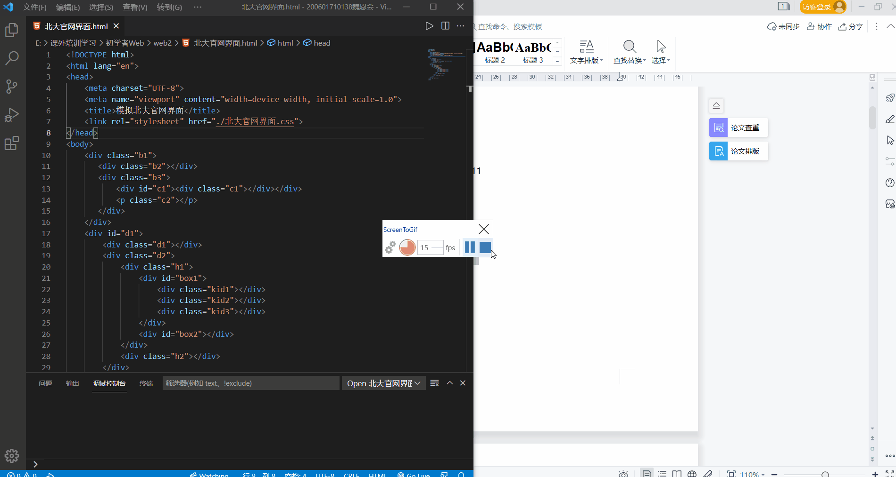
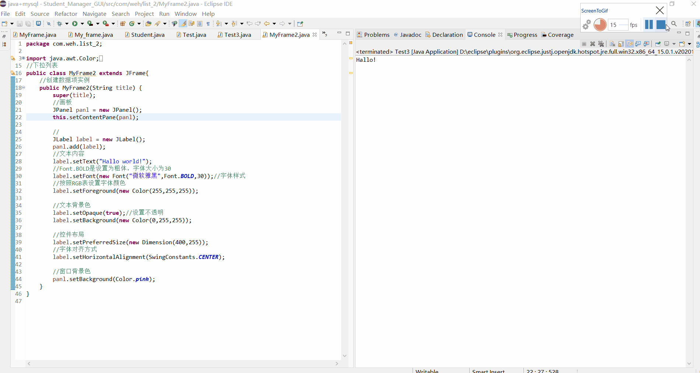
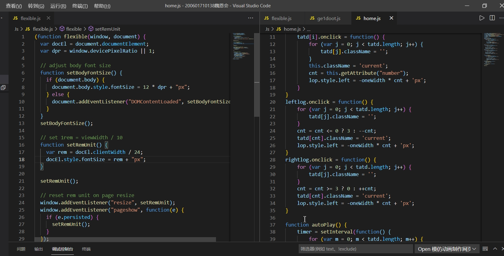
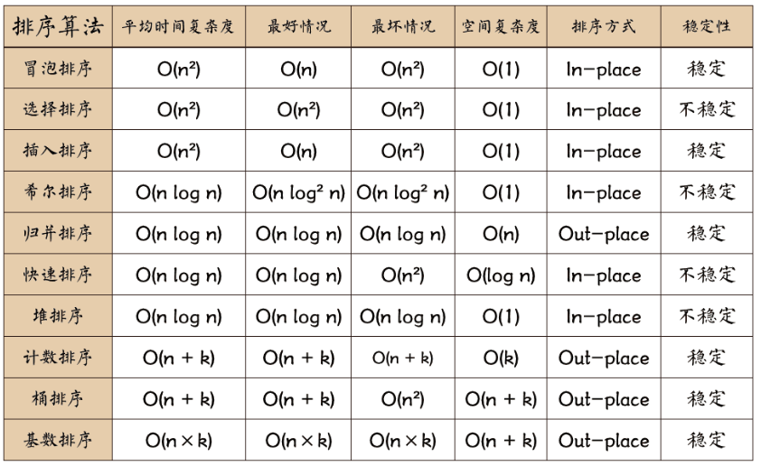

页面加载中...
页面加载中... - 

- 
- 
- html+css3+js
- Java基础
- 个人笔记
（1）学习了常见标签：
（2）标签有种功能。 --超链接、锚链 超链接：href="网址、地址、文件名" title="显示输入的文字" target="">百度href:链接跳转地址。 title：悬停文本。 target:何种窗口打开。 例如： 锚点
可不用css也可以设计字体样式; 如果未设置face,则是默认为宋体；大小可为负值； 是一个行类块元素标签； 2.font的拓展 font-family 是设置字体的字型 font-color 字体颜色 font-size 大小 font-style：normal；是为正常字体 italic斜体 white-space：nowrap 是为内容不折行；/pre-nowrap 是折行的 font-weight:bold;字体宽度；也可以用数字加粗 text-align:center;文本居中 text-indent：2em;首行缩距 text-decoration:none;无修饰 //underline下划线 line-height:50px;设置行高 padding:0;文本与文本框的距离为0 margin:0;文本框的外间距 border:1px solid red;厚度为1,实线，红色 border-width:10px 20px 30px 40px;(上右下左) border-style:solid/dashed/dotted/double(实线，虚线，点状，双线框) border-color:red green blue gold;(上为红，右绿，下蓝，左金色) border-bottom-width:10px;底边的宽度为10px border-bottom:10px solid red;底边是10px,实线，红色的文本框
2.1 文件命名规则 文件名称统一用小写的英文字母、数字和下划线的组合，其中不得包含汉字、空格和特殊字符；命名原则的指导思想一是使得你自己和工作组的每一个成员能够方便的理解每一个文件的意义，二是当我们在文件夹中使用“按名称排例”的命令时，同一种大类的文件能够排列在一起，以便我们查找、修改、替换、计算负载量等等操作。 a. HTML的命名原则 引文件统一使用index.htm index.html index.asp文件名（小写） 各子页命名的原则首先应该以栏目名的英语翻译取单一单词为名称。例如： 关于我们 \ aboutus 信息反馈 \ feedback 产 品 \ product 如果栏目名称多而复杂并不好以英文单词命名，则统一使用该栏目名称拼音或拼音的首字母表示； 每一个目录中应该包含一个缺省的html 文件，文件名统一用index.htm index.html index.asp； b. 图片的命名原则 图片的名称分为头尾两部分，用下划线隔开，头部分表示此图片的大类性质 例如：广告、标志、菜单、按钮等等。 放置在页面顶部的广告、装饰图案等长方形的图片取名： banner 标志性的图片取名为： logo 在页面上位置不固定并且带有链接的小图片我们取名为 button 在页面上某一个位置连续出现，性质相同的链接栏目的图片我们取名： menu 装饰用的照片我们取名： pic 不带链接表示标题的图片我们取名： title 范例：banner_sohu.gif banner_sina.gif menu_aboutus.gif menu_job.gif title_news.gif logo_police.gif logo_national.gif pic_people.jpg 鼠标感应效果图片命名规范为"图片名+_+on/off"。 例如：menu1_on.gif menu1_off.gif c. javascript的命名原则 例如：广告条的javascript文件名为 ad.js 弹出窗口的javascript文件名为 pop.js d. 动态语言文件命名原则 以性质_描述，描述可以有多个单词，用“_”隔开，性质一般是该页面得概要。 范例：register_form.asp register_post.asp topic_lock.asp
(1). 开发平台的选择 在 Firefox 上编写CSS, 同时兼容其他浏览器的. 这样做肯定会比在 IE 做好再到别的浏览器兼容来得容易, 因为 IE 对老标准支持还是很不错的, 而 IE 的一些特有功能人家却不支持. 所以推荐以 Firefox 结合 Firebug 扩展作为平台。 (2). CSS Hack 的顺序 使用 Firefox 作为平台, 只要代码写得够标准, 其实要 Hack 的地方不会很多的, IE 以外的浏览器几乎都不会有问题, 所以可以暂时忽略, 顺序如下：Firefox -> IE6 -> IE7 -> 其他 (3). Hack 的方法 说到方法有两种, 一种是在不同文件中处理, 另一种则是在同一个文件中处理. 其实作用是相同的, 只是出发点不一样而已. 1. 同一文件中处理. 如: id="bgcolor"的控件要在 IE6中显示蓝色, IE7中显示绿色, Firefox等其他浏览器中显示红色。
- 排序算法是《数据结构与算法》中最基本的算法之一。 内部排序:数据记录在内存中进行排序 外部排序:因排序的数据很大，一次不能容纳全部的排序记录，在排序过程中需要访问外存.
- 
十大经典排序算法
- 冒泡排序
- 冒泡排序（Bubble Sort）也是一种简单直观的排序算法。它重复地走访过要排序的数列，一次比较两个元素，如果他们的顺序错误就把他们交换过来。走访数列的工作是重复地进行直到没有再需要交换，也就是说该数列已经排序完成。这个算法的名字由来是因为越小的元素会经由交换慢慢"浮"到数列的顶端。
- 算法步骤:比较相邻的元素。如果第一个比第二个大，就交换他们两个。 对每一对相邻元素作同样的工作，从开始第一对到结尾的最后一对。这步做完后，最后的元素会是最大的数。 针对所有的元素重复以上的步骤，除了最后一个。 持续每次对越来越少的元素重复上面的步骤，直到没有任何一对数字需要比较。